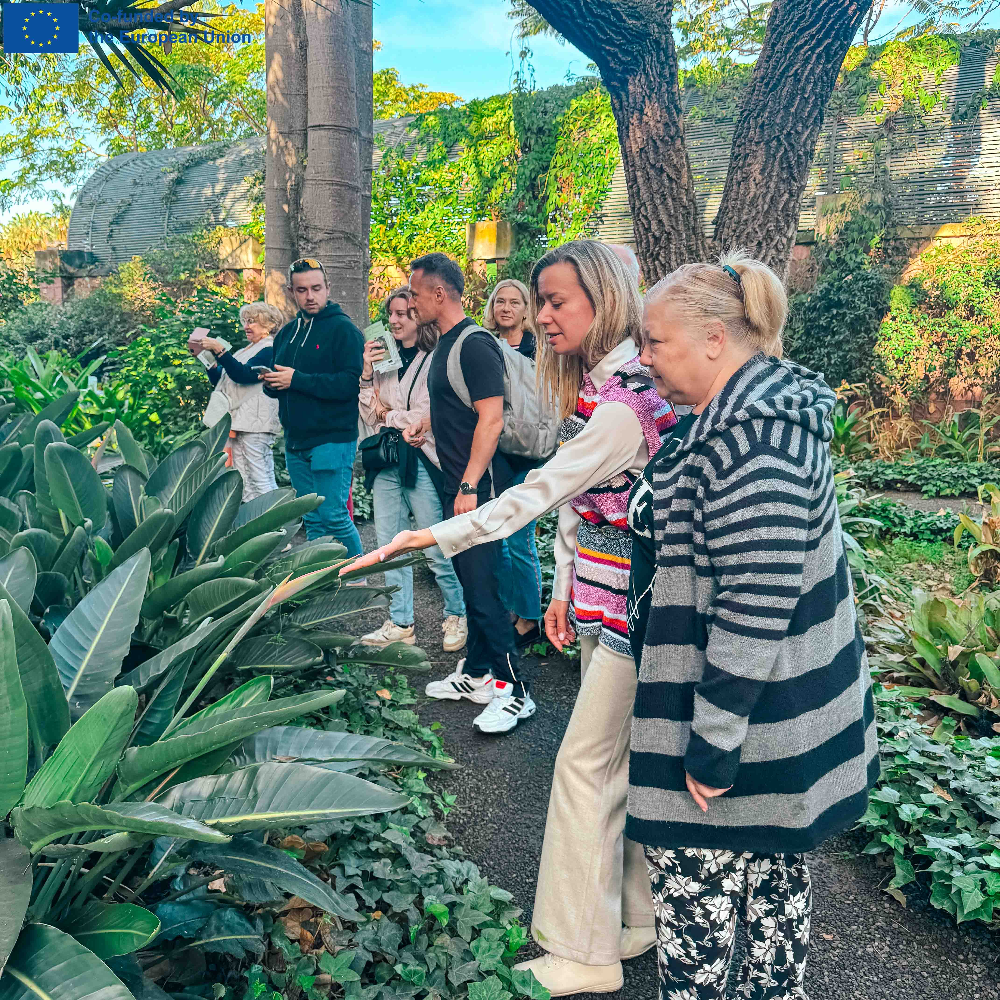
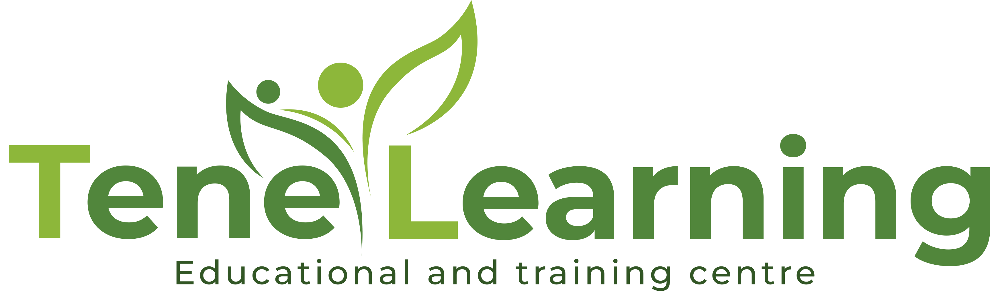
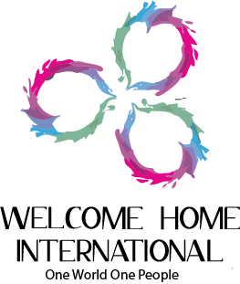

Empowering Active Ageing, Well-Being & Digital Inclusion
A holistic Erasmus+ programme helping adults 60+ — including migrants and refugees — to learn, connect and thrive. Twelve weeks in Tenerife, five weeks in Belgium.

Move, learn, connect
Migrants & refugees
A warm, practical path to thriving later in life
Across Europe, people are living longer — but many older adults face isolation, fewer learning opportunities and digital barriers. “Hold on, be STRONG!” brings adults 60+ together to build skills, well-being and belonging.
Reducing social isolation
Group activities, storytelling and peer learning that rebuild connection and confidence.
Boosting digital literacy
Friendly, step-by-step guidance — messaging, video calls, online services and everyday tools.
Mental & physical well-being
Mindfulness, gentle movement and relaxation designed for energy and resilience at every age.
A partnership across Europe


Learning that feels meaningful, supportive and part of everyday life.— The holistic approach behind Hold on, be STRONG!
12 modules to learn, move & connect
A complete, ready-to-use programme for educators, community organisations and volunteers working with older adults.
Watch the project come to life
A guided relaxation exercise and short success stories from the people behind Hold on, be STRONG!
Real workshops, real connection
Glimpses of participants learning, moving and growing together in Tenerife and beyond.
Bring the programme to your community
Download the open toolkit, share it with educators and volunteers, or get in touch to learn more about Hold on, be STRONG!